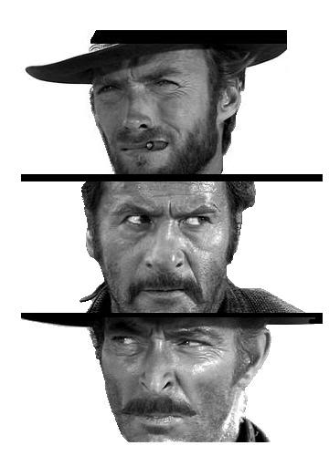
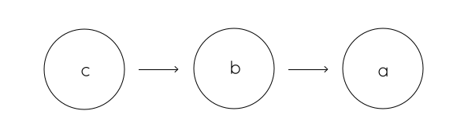

name: cover background-image: url(../assets/img/background.png) # Prototypes .slide-cover[ JavaScript<br> Wintersemester 2014/2015<br> HS Augsburg Johannes Ewald<br> Paul Torka<br> ] --- layout: true class: center, middle .slide-header-left[ Prototypes ] .slide-header-right[ JavaScript WS 14/15 HSA ] ---  # Prototypes --- Es gibt keine Klassen in JavaScript. --- Aber es gibt Funktionen und den `new`-Operator... --- ## Klassen-ähnliche Konstrukte in JavaScript --- ```javascript function MyClass(a, b, c) { function somePrivateMethod() { ... } this.somePublicMethod = function () { ... }; } ``` ```javascript var myClass = new MyClass(); myClass.somePublicMethod(); ``` --- ```javascript function MyClass() { function somePrivateMethod() { ... } return { somePublicMethod: function () { ... } }; } ``` --- ```javascript function MyClass(a, b, c) {} MyClass.prototype._somePrivateMethod = function () { ... }; MyClass.prototype.somePublicMethod = function () { ... }; ``` --- ## Prototypen Jede Funktion besitzt einen `prototype`, der angibt, welche Eigenschaften ein Objekt hat, das von der Funktion per `new` erzeugt wurde. --- ### Beispiel ```javascript function Monster() {} Monster.prototype.health = 10; Monster.prototype.growl = function () { console.log("GRRROOOOOWWWWLLL!!"); }; ``` ```javascript > var monster = new Monster(); > monster.health 10 > monster.growl() GRRROOOOOWWWWLLL!! ``` --- **Aber** ```javascript > monster.hasOwnProperty("health") false > monster.health = 5; > monster.hasOwnProperty("health") true ``` --- ### Prototypen-Vererbung ohne Functions ```javascript var monsterPrototype = { heath: 10, growl: function () { console.log("GRRROOOOOWWWWLLL!!"); } }; var monster = Object.create(monsterPrototype); ``` ---  Jedes Objekt kennt über eine (versteckte) Referenz seinen Prototyp --- ```javascript var proto = {}; var obj = Object.create(proto); ``` ```javascript > Object.getPrototypeOf(obj) === proto; true ``` --- Wird eine Eigenschaft auf einem Objekt nicht gefunden, so wird dessen Prototyp abgefragt, usw. ```javascript > proto.someProperty = true; > obj.someProperty true ``` --- Zuweisungen geschehen immer auf dem **referenzierten Objekt**, nicht auf dem Prototyp ```javascript > obj.someProperty = true; > proto.someProperty undefined ``` --- Ebenso `delete` ```javascript > Monster.prototype.health = 15; > monster.health 15 > monster.health = 10; > monster.health 10 > delete monster.health; > monster.health 15 > delete monster.health; > monster.health 15 ``` --- Der Vorteil der Prototypen-Vererbung ist, dass alle Instanzen sich die Eigenschaften teilen, solange sie nicht vom Prototyp abweichen. → deutlich geringerer Speicherverbrauch --- ### Vergleich bei 10 Instanzen ```javascript function Monster() {} Monster.prototype.health = 10; Monster.prototype.growl = function () { console.log("GRRROOOOOWWWWLLL!!"); }; ``` 10x Objects + 1x Primitive + 1x Function --- ### Vergleich bei 10 Instanzen ```javascript function Monster() { this.health = 10; this.growl = function () { console.log("GRRROOOOOWWWWLLL!!"); }; } ``` 10x Objects + 10x Primitives + 10x Functions --- .alert[ ### Achtung ] Das bedeutet aber ```javascript Monster.prototype.victims = []; ``` ```javascript > monster1.victims.push("Human"); > monster2.victims ["Human"] ``` --- Alle Instanzen teilen sich **ein einziges** `Object`, `Array`, etc. --- ### Lösung ```javascript function Monster() { this.victims = []; } // Konvention: null deutet an, dass jede Instanz // eine eigene victims-Property hat Monster.prototype.victims = null; ``` --- Nun hat jede Instanz ihr eigenes, unabhängiges Objekt ```javascript > monster1.victims.push("Human"); > monster2.victims [] ``` --- ### Komplettes Beispiel ```javascript function Monster(name) { this.name = name; } Monster.prototype.name = null; Monster.prototype.attack = function () { ... }; ``` --- ```javascript function Godzilla(name) { // Ruft die Monster-Funktion auf this auf Monster.apply(this, arguments); } // Erzeugt ein neues Objekt das als Prototyp // Monster.prototype hat Godzilla.prototype = Object.create(Monster.prototype); Godzilla.prototype.attack = function () { ... // Ruft die attack-Funktion des // Monsters auf diesem Objekt auf Monster.prototype.attack.apply(this, arguments); }; ``` --- ### Ok, und wie gehen private Properties? --- ... es gibt kein `private` und `public` in JavaScript. Funktionen sind die einzige Möglichkeit, Sichtbarkeiten zu begrenzen. --- ### Konvention: Private Properties fangen mit einem Unterstrich an ```javascript function Monster() {} Monster.prototype._health = 5; Monster.prototype.getHealth = function () { return this._health; }; ```